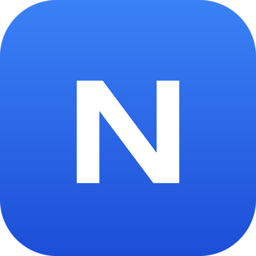

Du premier contact
au suivi du dossier.
Leads, clients, biens, mandats, visites et transactions dans le même espace.

NEXUS REALTYMoins d’onglets. Plus de clarté.
Retrouvez vos prospects, vos biens et vos suivis dans une fenêtre qui vous appartient.
Illustration de l’interface · aucune donnée client
Leads, clients, biens, mandats, visites et transactions dans le même espace.
Une visite guidée et des fiches pratiques pour prendre vos marques, module par module.
Une base locale séparée de l’application. À sauvegarder régulièrement, comme vos autres dossiers importants.
Choisissez le système de votre ordinateur.
Un fichier à ouvrir, sans installation.
Votre application dans sa propre fenêtre.
Une AppImage à ouvrir directement,
ou un paquet pour Ubuntu et Debian.
macOS : pas encore disponible. Ces fichiers sont destinés aux ordinateurs x64, pas aux téléphones, tablettes ou machines ARM. Le téléchargement n’est pas une souscription et ne configure pas un serveur partagé.
Placez-le dans un dossier que vous garderez, par exemple Documents → Nexus Realty. La version portable ne crée pas de raccourci automatiquement.
L’application prépare ses fichiers temporaires puis s’ouvre dans sa propre fenêtre. Cela peut prendre quelques secondes au premier démarrage.
Créez votre premier compte administrateur. Après la connexion, une visite guidée vous est proposée.
Windows SmartScreen peut afficher un avertissement. Uniquement si le fichier vient de votre source de confiance : « Informations complémentaires » → « Exécuter quand même ». Ne désactivez pas votre antivirus. Si le bouton n’est pas proposé, demandez conseil à votre administrateur.
Clic droit → Propriétés → Permissions → autoriser l’exécution comme programme (le libellé varie selon Linux).
Aucune commande npm ou sudo pour la lancer. Avec le .deb, ouvrez le paquet dans votre installateur de logiciels ; un mot de passe administrateur peut être demandé.
Créez votre compte, puis découvrez la visite guidée. Après une installation .deb, retrouvez Nexus Realty dans le menu Applications.
Certains Linux ont besoin de FUSE ou de bibliothèques système. Préférez le .deb sur Ubuntu / Debian. Une configuration système peut rester nécessaire selon votre distribution.
Chaque ordinateur possède sa propre base. Il n’y a pas de synchronisation automatique entre les postes. Les rappels fonctionnent tant que l’application et son serveur sont ouverts. Pour partager un espace entre collaborateurs et y accéder PC éteint, un hébergement serveur séparé reste nécessaire.